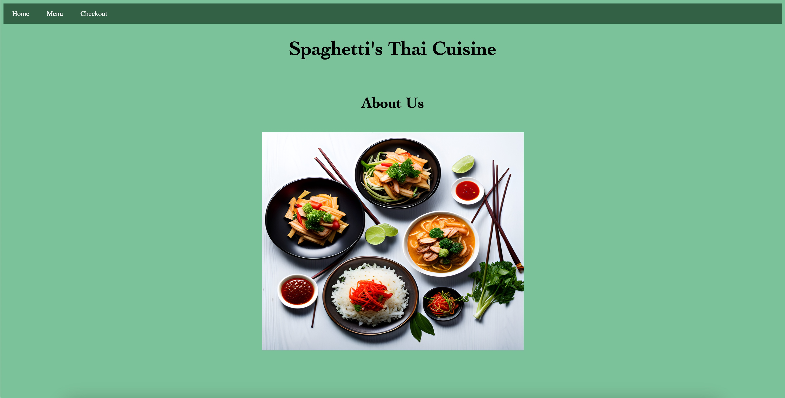
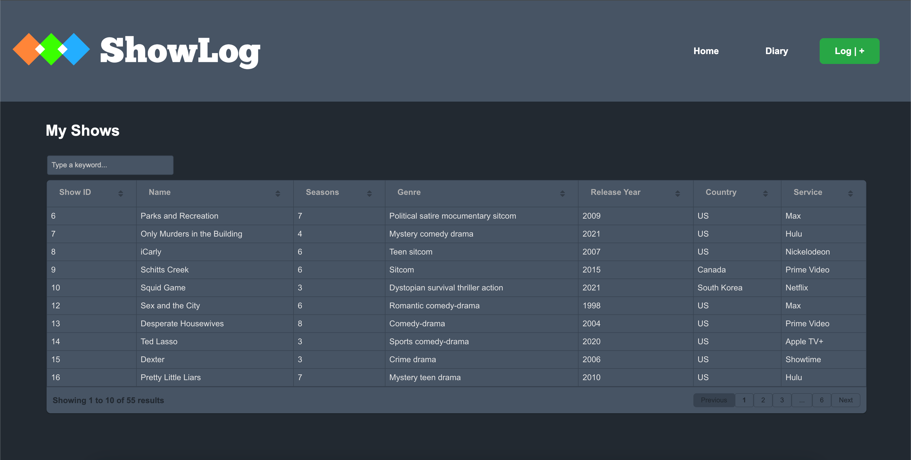
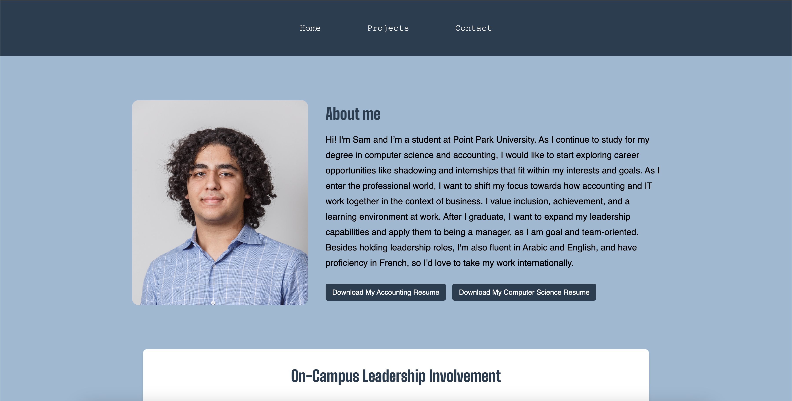
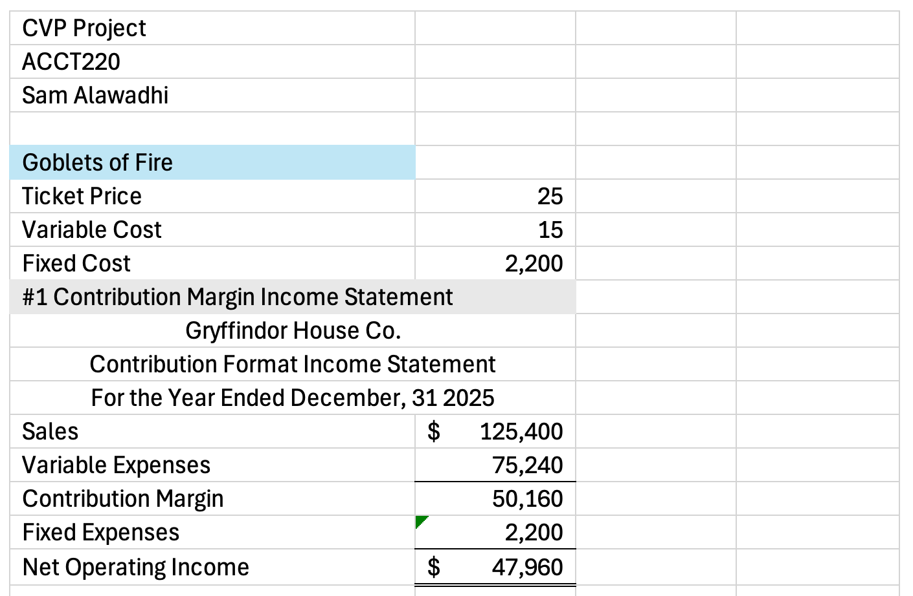
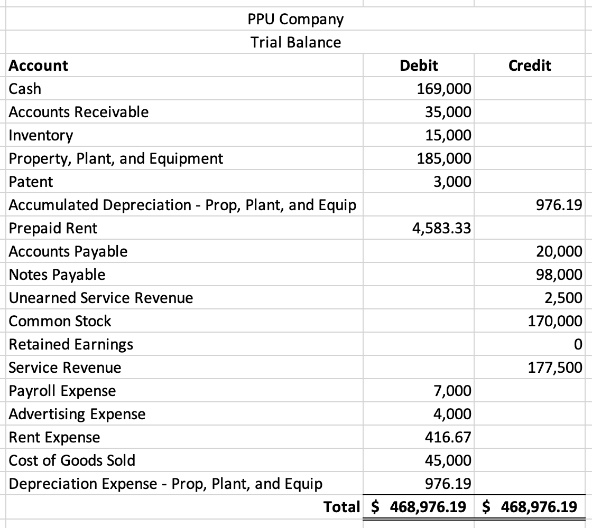
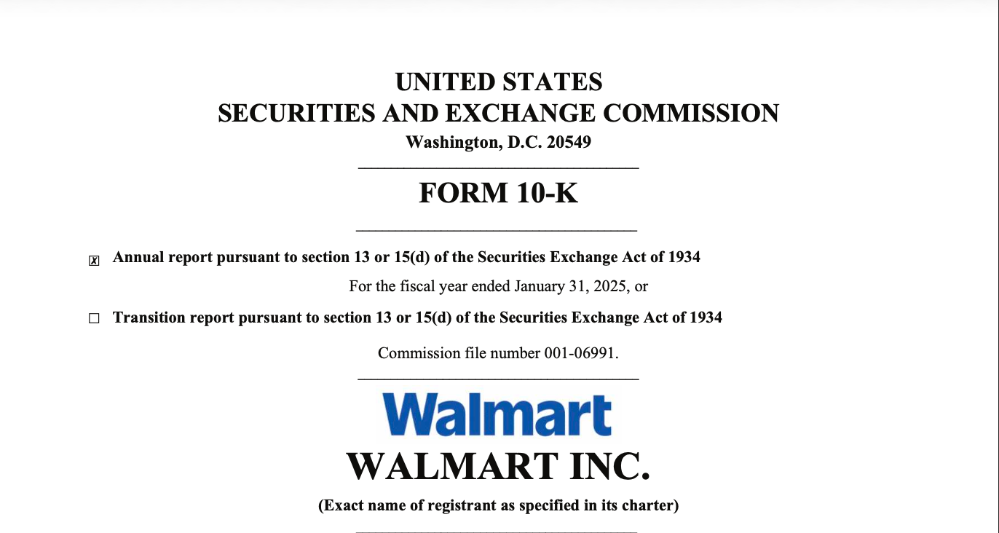

Spaghetti's Thai Cuisine
My first full coding project from CMPS 162 Intro to Programming. It's a group project that uses HTML,
JavaScript, and CSS to create a Thai Cuisine ordering website. Some features include a random number
generator, a number verifier, different interactive buttons, a form, and more

ShowLog
ShowLog is my first complex solo coding project from CMPS 262 Advanced Programming. It's a TV show logging platform
that is heavily inspired by Letterboxd, featuring user reviews, watchlists, editing features, and more. It operates using
APIs and local/online databases.

Sam's E-portfolio
The website you are currently viewing! I decided to use what I know about website creation to make my own e-portfolio instead
of using a 3rd party service. It highlights my work experience, skills, and projects.

Cost-Volume-Profit Project
This project provides a realistic analysis that managerial accountants perform
regularly. Some topics that were discussed include contribution margin income statements, break-even point, target profit,
margin of safety, decision-making recommendations, and a comparison of cost structure and profit stability.

Financial Statements and Analysis Project
This project is a basic example of an accounting cycle, which includes posting journal entries, using T-accounts, and
creating a trial balance, financial statements, and common-size financial statements. Additionally, there's an analysis
that discusses ratios that reveal the liquidity, profitability, and effectiveness of the company.

Walmart 10-K Report Project
Completed in Intermediate Financial Accounting III, this project is an analysis of Walmart's 2025 Annual Report. It
it specifically discusses Walmart's Significant Accounting Policies, FASB Accounting Standards, pending legal proceedings,
and financial statement footnotes.